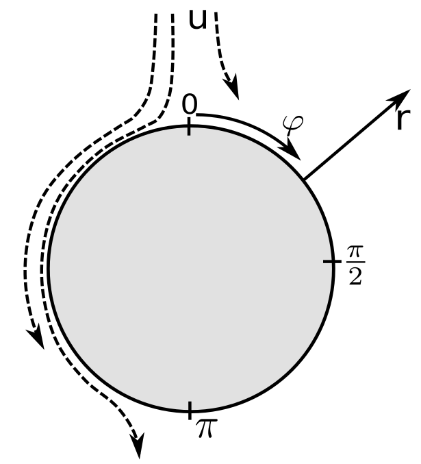

Advection-dominated reactive species transport at fluid interfaces via data-driven Subgrid-scale modeling
Dennis Hillenbrand, Andre Weiner, Dieter Bothe, Holger Marschall
Multiscale problem
Industrial application

Design of bubble column reactors has significant influence on yield and selectivity
For predictions local phenomena must be understood
Multiscale problem
High Schmidt number
- $O_2$ bubble of $d_b \approx 1 mm$ in water
- $\text{Sc} \approx 500$, \text{Re} $\approx 250$
- Hydrodynamic boundary layer: $\delta_h / d_b \propto \text{Re}^{-1/2} \approx 50 \mu m$
- Species boundary layer: $\delta_c / \delta_h \propto \text{Sc}^{-1/2} \approx 2.5 \mu m$
Effect of numerical underresolution
at fluid interfaces with application to mass transfer from rising bubbles. JCP (2017), 261-289
red line: linear numerical approximation
blue line: analytical profile
- underpredicted interface gradient
- overpredicted gradient and value at first face layer
Results in too small transfer rates
Remedy by SGS modeling
- correct gradients at faces
- make sure that species amount stays the same
How to construct $f(\phi)$?
SGS model construction
Analytical approach limited to
- Surfactant sorption
Pesci et al.: Computational analysis of single rising bubbles influenced by soluble surfactant. JFM (2018), 709-763 - Physisorption and simple reactions
Weiner et al.: Experimental and numerical investigation of reactive species transport around a small rising bubble. CES (2019)
Machine learning model for complex reactions

But how to get the data?
SGS model - Data generation
DNS of simplified substitute problem
Parameter variation for one specific bulk reaction
- $\chi \in [1,3]$
- Pe $\in [100,200]$
- Da $\in [0,1]$
- Only liquid phase
- constant bubble shape
- rotational symmetry
Use data from interfacial region to train machine learning model
Results in an analytical expression $f (\bar{c}, r, \text{Da})$
SGS model - Workflow
Validation - 2D
Same setup, but different flow parameters
local Sherwood number: $\text{Sh}_\text{loc} = \frac{\left( \partial_n c \right)_\Sigma}{c_\Sigma} d_b$

Local Sherwood number plotted along polar angle
Validation - 3D
Bubble in low Re-regime with physisorption
Prescribed velocity field from Satapathy-Smith solution
- $\text{Re} \approx 3.7$, $\text{Pe} \approx 2000$
Out of the substitute ranges! - No adjustments needed
- Radial resolution can be reduced by a factor of 10
Outlook
- Investigate and extend parameter range
- Is applicability completely independent of Re and Sc?
- Include higher reaction rates
- Generalization to more complex reaction systems
- selective reaction schemes, e.g. $A+B \rightarrow P ; \; A+P \rightarrow S$
- Can current workflow be used for multiple species?
- Application to deformable rising bubbles
Summary
Thank you
for your attention!
Remaining questions?
Dennis Hillenbrand hillenbrand@mma.tu-darmstadt.de
Andre Weiner weiner@mma.tu-darmstadt.de
Dieter Bothe bothe@mma.tu-darmstadt.de
Holger Marschall marschall@mma.tu-darmstadt.de
Machine learning
Concept of multilayer perceptron
- Combination of single perceptrons $y = f \left( \sum_i w_i x_i \right)$
- Possible activation function: sigmoid $f(z) = \frac{1}{1+e^{-z}}$
- Optimization of weights $w_i$ such that specified loss (e.g. mean squared error) decreases for given set of data pairs
- Output of each perceptron is used as input for another perceptron in hidden layers
- Weights can be efficiently adjusted by backpropagation algorithm
- Offers much flexibility for constructing the whole network


Machine learning
Settings for multilayer perceptron
- Framework: pyTorch
- One model with one scalar output for each label
- Multilayer perceptron with two hidden layers
- Input layer: 3 neurons; 1 for each input feature
- Hidden layers: 16 neurons per layer
- Output layer: single node (scalar output)
- Sigmoid activation function
- $10^6$ datapoints split into training (75%) and validation data (25%)
- ADAM optimizer
- MSE as loss function to optimize
- Training takes approx. 30 minutes on Nvidia GTX 960 GPU
Choice of input data
Transformation and sampling
- Reduce variance of labels if possible
(e.g. difference to average concentration instead of face concentration value) - Transform data to intervals in the range of [0,1]
- Evaluate feature importance
- Sample subsets such that each label is nearly uniformly distributed over its range
Choice of input data
Feature importance
- Sequential backward selection, based on k-Nearest-Neighbors and the L2-norm
- Average concentration the most important feature
- No improvement after first three features (No local velocity data necessary )